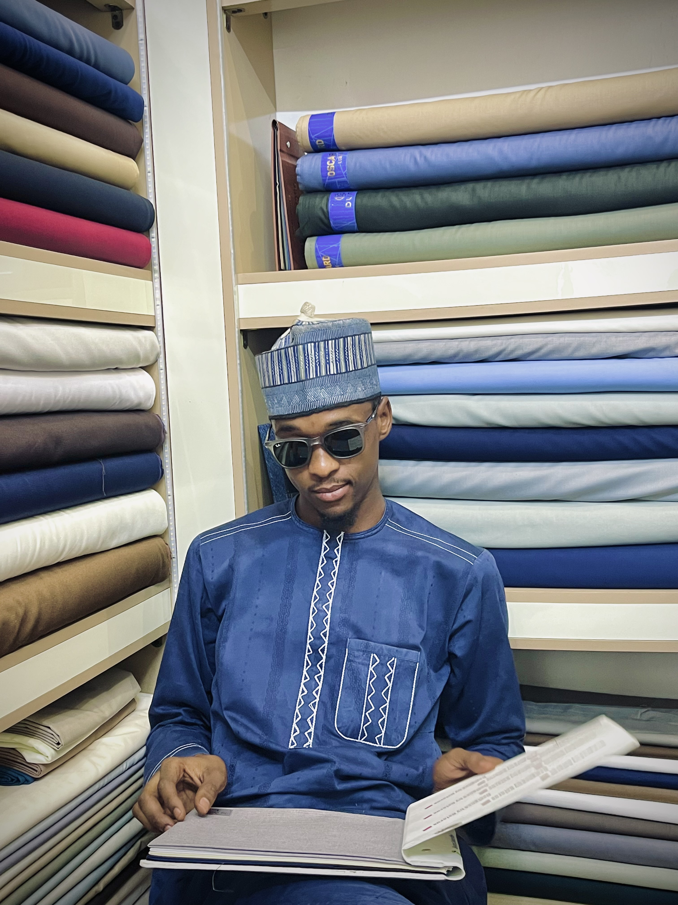

THE HOF COLLECTION
Luxury in
Every Thread.
A considered selection of premium fabrics, chosen for those who appreciate quality, character and timeless style.
EXPLORE THE COLLECTIONCURATED FOR DISTINCTION
The Collection.
Explore fabrics selected to bring
your personal style to life.
Loading the HOF collection…

THE FOUNDER · HOFTHE STORY BEHIND HOF
Built on quality.
Defined by detail.
Home of Fabric is guided by a simple belief: what you wear should reflect the standard you set for yourself.
We bring together carefully selected fabrics for individuals who value quality, confidence and timeless elegance. Every choice is made with attention to the feel, finish and character of the material.
PERSONAL SERVICE. DISTINCTIVE STYLE.